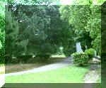

呂清夫 撰文

像淡水聖本篤修道院的院區，雖然建物很少，但是老樹垂地，芳草連天，單單這樣，就夠令人神往了（見左圖）。可惜這種例子不多，我在北投兒童公園看到的盡是砍剩的樹根，光禿禿地對著天空嘆息，有的大樹根還被挖出，閒棄一旁。我載林口竹林寺看到的是，樹幹被燒得有如木炭一般，大概是在樹下野炊之故罷，不知我們的遊客何時才能文明一點。台北新公園本來一座西式的博物館配上翠綠的林木，已經很好，誰知後來南邊塞進一個陳納德銅像，東邊又大興土木，建造了五顏六色的亭台樓榭，我一直覺得，這些中式建物和博物館建築格格不入，不論造形、色彩都十分衝突，而更要命的是為著這些水泥建物，不知砍掉了多少樹木。其實，以培育植物為名的植物園也是土木大興，林業試驗所自己便將衙門蓋在�堶情A而在這個豆腐乾式的現代建築之旁，又塞進了宮殿式的南海學園，其占地不為不大，砍樹不為不多。現在中央圖書館都蓋好了，但是南海學園中的臨時「央圖」不知為什麼還不撤走？近日反而聽說，南海學園又出現新的違建（見七月一日聯合晚報）。這種在公園綠地之中塞進水泥建物的例子太多了，從基隆的中正公園，到高雄的澄清湖，我們都可以看到一些大而無當的建築。我們絕不是反對建設，而是希望蓋房子不要想到哪�婸\到哪�堙A然後再來建建拆拆、拆拆建建，君不見有些光復後興建的校舍常要拆了重建嗎？倒是光復前的校舍往往較少變動，台大、師大的校舍應是現成的例子。不僅建築物，連銅像也是沒什麼章法，我家附近的一個小學便有點奇妙，門廳很小，但是卻有孫中山、蔣中正兩大銅像，一尊是向外對著馬路，一尊則向內對著操場，兩尊銅像剛好背靠著背，不知小孩子會不會覺得他倆是在玩遊戲？這件事在人台南火車些刊亦可找到同類，一尊是鄭成功，一尊好像是蔣中正，兩大立像也是背靠背站立在街頭，中間似乎隔著一面水泥做的籬芭，而更顯擁擠的是不遠處還有一組運動員的群像，至於群像之中有一個雕像竟是蘇南成！這種擁擠的「盛況」尚可以見之於民間的公園，著名的秋茂園或許就是一個抽樣。秋茂園是私立的免費公園，我們對於園方的慷慨雖然十分欽敬，但是對於園中的品味則要略表數言。因為它與台灣其他的公園綠地竟是那麼異曲同工，那麼擠滿了水泥產品——水泥塑像。在通霄的秋茂園，我們可以看到八仙與三軍齊步，看到天使與孫悟空齊飛，總之，整個不大的公園擠滿了古今中外、三教九流的水泥塑像。台南的秋茂園更是西遊記的群像與西部開拓史的牛仔同時登場，另外，佛陀像前又突然冒出一個現代博士，因之，處處給人以擁擠、突兀之感。園方的構想可能來自外國的雕刻公園，但要知道外國的雕刻公園占地甚廣，雕刻間的距離較遠，而且沒有一件作品是水泥做的，因為水泥價廉質粗，真正的藝術作品是不會選用水泥的，它們多半採用大理石、青銅之類的高價材料，並因為這些材料質色俱美，不會像水泥那樣還要漆得花花綠綠，或者掉得斑斑剝剝。總之，公園雕刻不是捏麵人，不是一天造成的，據我的觀察，台灣全省，包括達樂花園在內，都難得看到一個像樣的雕刻公園。金山達樂花園的雕刻遠不如青山之美，達樂的青山不但造形雄美，而且氣象萬千，值得一看再看，對於一心賞美的人來說，園方只要把樹種好，必要時多種些奇花異卉就好，其他粗糙的人工建物似乎不過是噱頭而已。據說新加坡每兩個人就擁有一棵樹，我們卻每廿六個人才擁有一棵樹，我們還要急著製造水泥叢林嗎？
原載1989.9.15.自立早報，收入1994年，呂清夫著「現代都市叢林派」